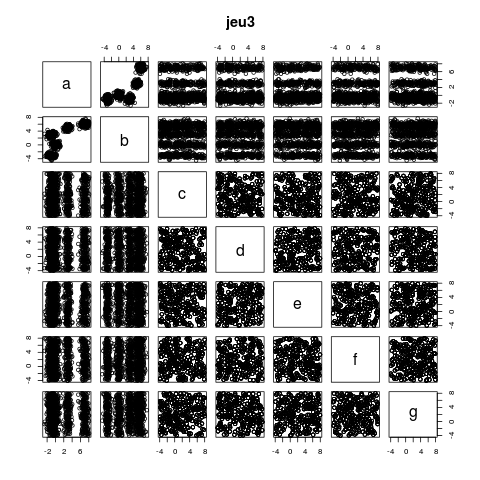
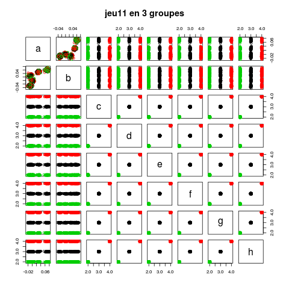

L'objectif de ce TD est de manipuler l'algorithme des k-moyennes disponible dans R.
L'algorithme des k-moyennes est disponible au travers de la fonction kmeans() de R. L'utilisation en est très simple :
kmeans (iris [,1:4], 3)
exécute l'algorithme des k-moyennes sur le jeu de données iris en
utilisant les quatre attributs longueur et largeur des sépales
et des pétales, en utilisant 3 centres.
À l'issue de son exécution, kmeans() a associé chaque
donnée à un groupe ; les groupes sont numérotés de 1 à K.
kmeans() fournit une liste d'objets (on sait cela en tapant
la commande help("kmeans") :
On peut exécuter plusieurs segmentations et considérer la meilleure en utilisant l'argument nstart :
kmeans (iris [,-5], 3, nstart = 30)
Par défaut, kmeans() effectue 10 itérations ; cela peut être insuffisant pour que l'algorithme converge ; dans ce cas, le message :
Warning message:
did not converge in 10 iterations
est affiché. On peut augmenter le nombre d'itérations avec le paramètre iter.max=n où n est le nombre d'itérations à effectuer (50 par exemple).
On peut visualiser le résultat de la segmentation à l'aide de couleurs. Ainsi, supposons que vous ayez segmenté en trois segments les iris et placé le résultat dans iris.3means.
plot (iris$Petal.Length, iris$Petal.Width)
représente chacun des iris dans le plan longueur des pétales x largeur des pétales.
On s'intéresse maintenant à trouver le nombre de groupes. Pour cela,
on va essayer plusieurs valeurs de K qui semblent
raisonnables. Par exemple, on essaie toutes les valeurs entre 2 et 10.
Pour cela, on fera une boucle :
for (k in 2:10)
...
Chacune des segmentations (pour chacune des valeurs de k) est placée dans une liste :
iris.kmeans <- list()
for (k in 2:10)
iris.kmeans [[k]] <- kmeans (iris [, -5], k, nstart = 30)
iris.kmeans [[2]] contiendra le résultat de kmeans() pour k = 2 (attention, ce sont des doubles crochets car iris.kmeans est une liste, pas un vecteur), iris.kmeans [[3]] contiendra le résultat de kmeans() pour k = 3, ... iris.kmeans [[10]] contiendra le résultat de kmeans() pour k = 10.
jeu1 <- read.table ("https://philippe.preux.github.io/ensg/miashs/fouilleDeDonneesII/tp/k-moyennes/jeu1.txt", header = T)
C'est toujours bien de jeter un coup d'œil aux données avant de faire quoi que ce soit d'autre.
dim (jeu1)
donne le nombre de données et d'attributs (1000 et 2). 2 attributs, on peut donc faire un graphe en 2 dimensions :
plot (jeu1)
qui montre 5 magnifiques groupes
inertie <- rep (NA, times = 15)
for (i in 2:15) {
km <- kmeans (jeu1, nstart = 30, iter.max = 50, centers = i)
inertie [i] <- sum (km$withinss)
}
plot (inertie)
donne le graphique suivant :
qui montre clairement qu'il y a 5 clusters.
On fait donc une segmentation en 5 groupes :
km5 <- kmeans (jeu1, nstart = 30, iter.max = 50, centers = 5)
plot (jeu1, col = km5$cluster)
qui donne bien les groupes de points attendus.
jeu2 <- read.table ("https://philippe.preux.github.io/ensg/miashs/fouilleDeDonneesII/tp/k-moyennes/jeu2.txt", header = T)
Comme précédememnt, on jette un coup d'œil aux données :
dim (jeu2)
donne 1000 et 7.
plot (jeu2)
donne un graphique plus compliqué à lire :
On reconnaît bien les 5 mêmes groupes que pour le jeu1 et 5 attributs dont les valeurs semblent réparties de manière uniforme dans leur domaine de définition.
Voyons ce qui va se passer, comment les k-moyennes vont s'en sortir...
inertie2 <- rep (NA, times = 15)
for (i in 2:15) {
km <- kmeans (jeu2, nstart = 30, iter.max = 50, centers = i)
inertie2 [i] <- sum (km$withinss)
}
plot (inertie2)
donne le graphique suivant :
qui montre clairement qu'il y a 5 clusters.
On fait donc une segmentation en 5 groupes :
km5.2 <- kmeans (jeu2, nstart = 30, iter.max = 50, centers = 5)
plot (jeu2 [, 1:2], col = km5.2$cluster)
qui donne bien les groupes de points attendus.
jeu3 <- read.table ("https://philippe.preux.github.io/ensg/miashs/fouilleDeDonneesII/tp/k-moyennes/jeu3.txt", header = T)
Comme précédememnt, on jette un coup d'œil aux données :
dim (jeu2)
donne 1000 et 7.
plot (jeu3)
donne un graphique ressemblant énormément au jeu2 :

On reconnaît bien les 5 mêmes groupes que pour le jeu1 et 5 attributs dont les valeurs semblent réparties de manière uniforme dans leur domaine de définition.
Visiblement, c'est la même chose que pour le jeu2. On le fait quand même puisqu'on nous le demande.
inertie3 <- rep (NA, times = 15)
for (i in 2:15) {
km <- kmeans (jeu3, nstart = 30, iter.max = 50, centers = i)
inertie3 [i] <- sum (km$withinss)
}
plot (inertie3)
donne le graphique suivant :
qui ne montre pas de coude comme les deux précédents.
Il est intéressant de superposer ce graphique avec celui obtenu avec le jeu2 :
(On divise par 10 l'inertie du jeu3 pour que les deux graphiques soient à la même échelle : c'est juste l'allure de la courbe qui nous intéresse.)
Cercles noirs : inertie pour le jeu 2 ; points rouges : inertie pour le jeu 3.
Que se passe-t-il ?
On fait une segmentation en 5 groupes puisque l'on voit bien 5 groupes en haut à gauche du graphique :
km5.3 <- kmeans (jeu3, nstart = 30, iter.max = 50, centers = 5)
plot (jeu3 [, 1:2], col = km5.3$cluster)
qui donne ... rien du tout :
Que se passe-t-il ?
jeu4 <- read.table ("https://philippe.preux.github.io/ensg/miashs/fouilleDeDonneesII/tp/k-moyennes/jeu4.txt")
dim(jeu4)
donne 825 et 2
km3.4 <- kmeans (jeu4, centers = 3, restart = 30, iter.max = 50)
plot(jeu4)
donne cette figure :
dans laquelle un humain voit 3 groupes, ces espèces de filaments.
plot (jeu4, col = km3.4$cluster, main = "jeu4 segmenté en 3 groupes par les k-moyennes")
Ça peut être décevant... mais ce n'est pas étonnant : les k-moyennes trouvent des groupes sphériques.
inertie4 <- rep (NA, times = 15)
for (i in 2:15) {
km <- kmeans (jeu4, nstart = 30, iter.max = 50, centers = i)
inertie4 [i] <- sum (km$withinss)
}
plot (inertie4)
Rien de concluant...
C'est très ressemblant au cas précédent.
S'agissant d'anneaux concentriques, on doit avoir le réflexe d'utiliser des coordonnées polaires à la place de coordonnées cartésiennes. Ainsi, les points appartenant à un anneau sont tous à peu près situés à la même distance de l'origine du repère.
jeu5$distance.a.l.origine <- sqrt (jeu5$V1^2 + jeu$V2^2)
km3.5 <- kmeans (jeu5$distance.a.l.origine, centers = 3, nstart = 30)
ce qui donne :
Le retour des 5 groupes...
inertie11 <- rep (NA, times = 10)
for (i in 2:10) {
km <- kmeans (jeu11, nstart = 30, iter.max = 50, centers = i)
inertie11 [i] <- sum (km$withinss)
}
plot (inertie11)
Clairement, le k optimal est 3.
Surprenant, non ?
plot (jeu11 [,1:2], col = km3.11$cluster)
donne cela
Surprenant, non ?
Non pas du tout, c'est normal :
plot (jeu11, col = km3.11$cluster)

On voit très bien 3 groupes très compacts dans 5 attributs (les 5 groupes ne sont visibles qu'avec 2 attributs : ces 5 groupes sont donc moins visibles que les 3 premiers.)